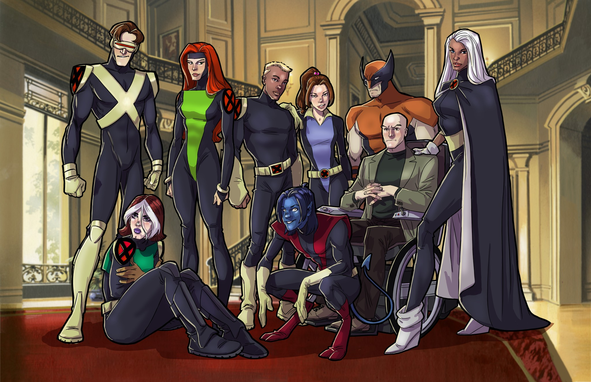
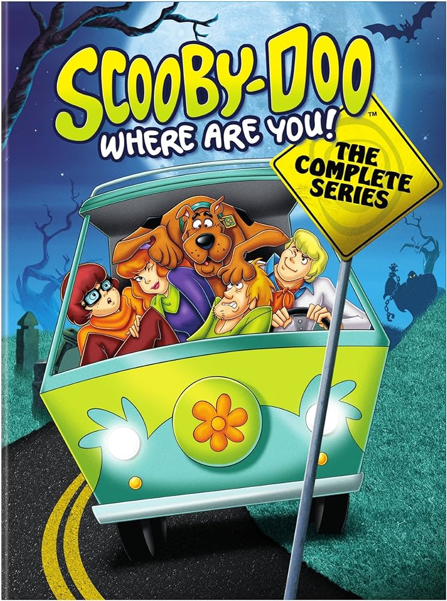
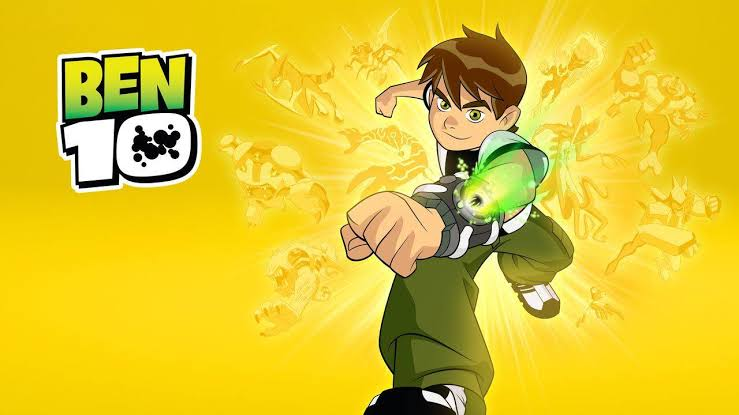
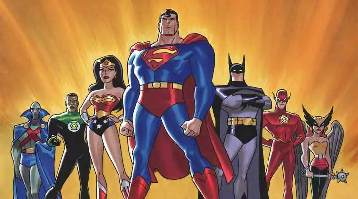
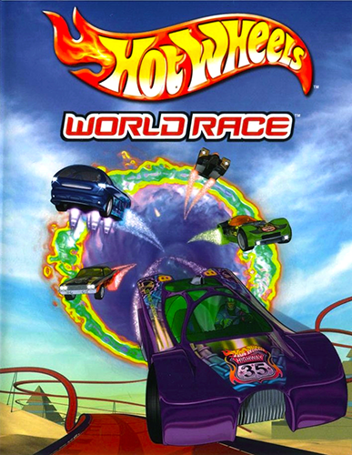
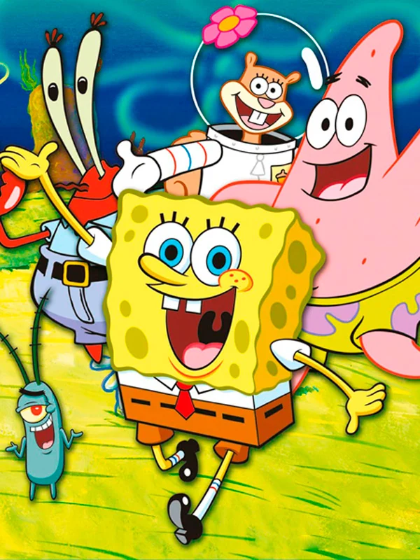

Um grupo de mutantes, chamados de "X-Men",
que usam seus poderes para o bem e recrutam outros mutantes para sua equipe,
resgatam uma jovem mutante chamada Jubileu, e travam uma batalha com os Sentinelas,
robôs criados para capturar mutantes.

Quatro adolescentes metidos a detetives — Fred, Velma, Daphne e Salsicha — com Scooby-Doo,
um Dogue Alemão falante, viajam numa van chamada Máquina de Mistério,
e ajudam a investigar casos misteriosos. Visitam lugares inóspitos, casas mal-assombradas,
parques abandonados, pântanos e ilhas — na maioria das vezes ameaçados por monstros,
zumbis e outros tipos de vilões; mas, considerando os episódios,
são geralmente chamados de "fantasmas", mesmo não sendo.

Benjamin Kirby Tennyson (Ben) é um garoto de 10 anos, que está sempre tentando ter aventuras
alienígenas antes de suas férias terminarem. No dia das férias não gostou da ideia da sua prima Gwen
passar o verão junto com ele e seu Avô Max. Quando achou o relógio chamado Omnitrix,
não conhecia o nome.

Enredo. Povenmire buscou inspiração para o show na sua infância vivida em Mobile, Alabama.
O show segue as aventuras dos meios-irmãos Phineas Flynn (Vincent Martella) e Ferb Fletcher
(Thomas Sangster), que vivem na cidade fictícia de Danville, em algum lugar na área dos três estados.

Cada jogador escolherá um personagem do clássico desenho animado e disputarão uma
eletrizante corrida marcada por mudanças nas condições da pista,
as habilidades especiais dos outros pilotos e com as perigosas armadilhas deixadas pelo Dick Vigarista.

Virgil Ovid Aldecort Hawkins (Super Choque) é um estudante afro-americano esperto,
atlético e bem-humorado do Colégio Dakota Union. Na explosão acidental conhecida como "Big Bang",
ele é exposto a um gás desconhecido e ganha superpoderes eletrostáticos, tornando-se um super-herói.

Superman, Batman, Mulher-Maravilha, Flash, Laterna Verde, Mulher-Gavião e J'onn J'onzz são um dos super-heróis mais
poderosos do mundo. Juntos, eles formam a Liga da Justiça, e assumem a difícil missão de proteger a humanidade e lutar
contra qualquer inimigo que tente ameaçar a segurança do planeta Terra.

Vivendo nos esgotos de Manhattan, quatro jovens tartarugas, treinadas na arte de kung-fu, Leonardo, Rafael,
Michelangelo e Donatello, junto com seu sensei, Mestre Splinter, tem que enfrentar o mal que habita cidade.

Esta é uma batalha em alta velocidade, disputada por dois times de corredores.
De um lado, pilotos humanos; do outro, os mortais robôs Racing Drones. Em meio à curvas perigosas,
loopings e derrapadas, eles estão no inédito longa-metragem estrelado pelas máquinas quentes Hot Wheels.

O desenho é ambientado no coração do Oceano Pacífico, na cidade subterrânea da Fenda do Bikini,
onde vive uma esponja do mar, chamada Bob Esponja. O fundo do mar é ambientado com uma espécie de papel
de parede, com florzinhas e um colorido forte que privilegia os tons de azul e o reflexo que o sol causa na água.
